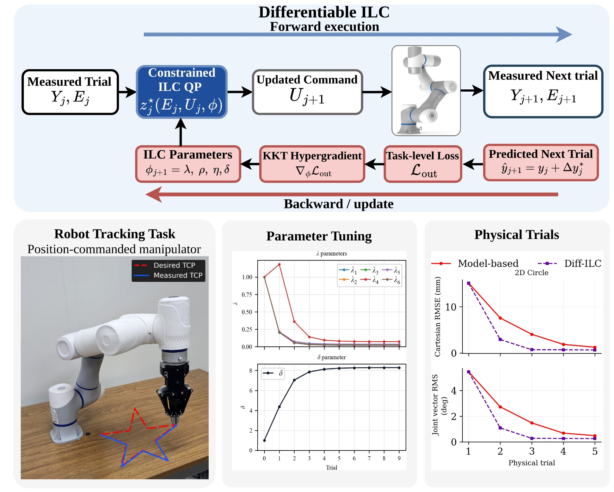
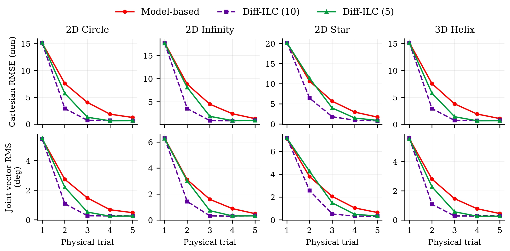
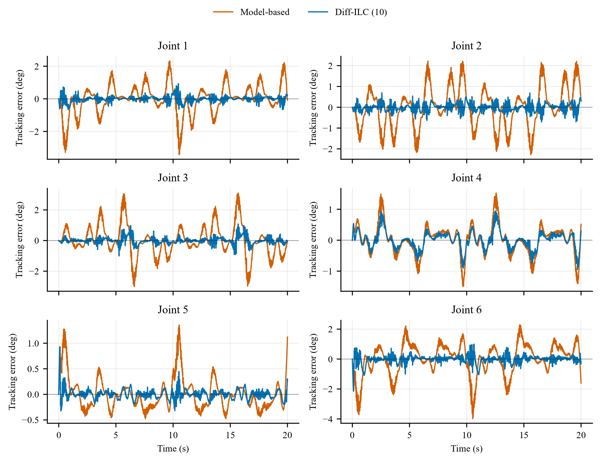
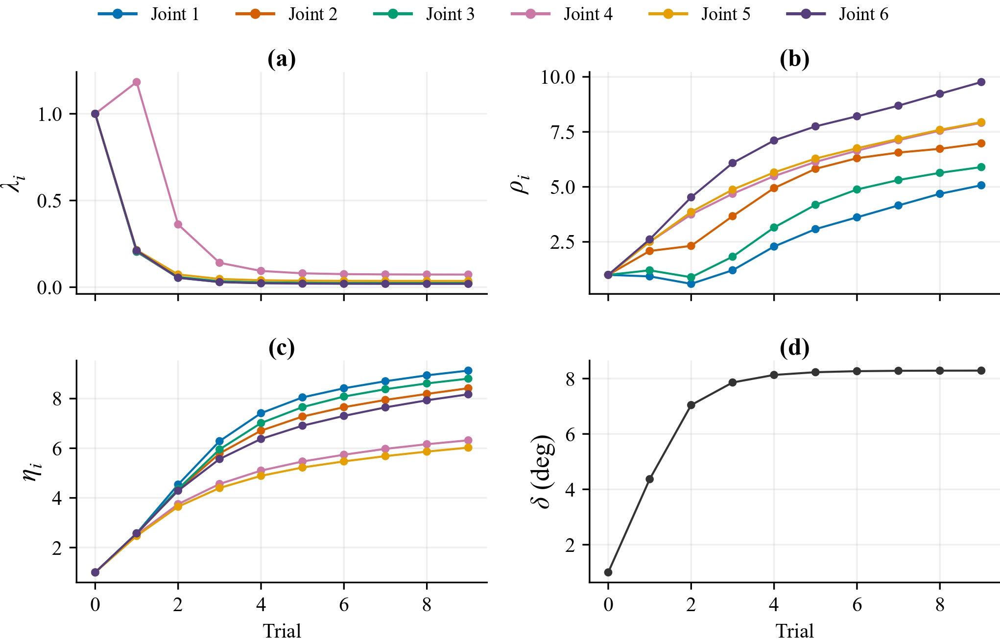

Black-box command interface
Uses commanded joint positions and measured robot motion; no torque-level model or access to the embedded servo controller is required.
Robotic manipulation · Iterative learning control
for Black-Box Position-Commanded Manipulators
Diff-ILC learns how to improve a robot's commanded trajectory from repeated executions, without access to its low-level servo dynamics. A constrained ILC update keeps each correction feasible, while differentiating through that update adapts the learning controller between physical trials.
Control and Instrumentation Engineering Department · KFUPM · Dhahran, Saudi Arabia
Trial-3 results for Diff-ILC with ten outer optimization epochs, relative to fixed-parameter constrained model-based ILC; averages over the four primary 0.1 Hz trajectories.
A compact walkthrough of the problem, the differentiable constrained-ILC loop, and the physical robot experiments.
Commercial manipulators often expose joint-position commands while keeping their embedded servo controllers and actuator-level dynamics inaccessible. That makes it difficult to improve tracking by redesigning the low-level controller directly.
Diff-ILC instead learns at the command level. After each physical execution, it uses the measured tracking error to compute the next feasible command correction, then adapts the ILC design parameters computationally before the robot moves again.
Uses commanded joint positions and measured robot motion; no torque-level model or access to the embedded servo controller is required.
The ILC correction respects joint-position, command-velocity, acceleration, and trial-to-trial correction limits.
Several parameter-update epochs can run from the same measured trial, without requiring extra physical robot executions.

The method separates expensive physical executions from computational adaptation: the robot supplies the measured trial, and the learning controller can update several times before the next motion.
Paired smooth perturbations identify a compact differential model of how command changes affect measured motion. The model is then kept fixed during the ILC experiments.
The current command is executed on the robot. From the measured error, a finite-horizon constrained QP computes a feasible trial-to-trial correction.
A real-anchored prediction evaluates the candidate next trial in joint space, Cartesian space, and command smoothness. Hypergradients are obtained by differentiating the locally active KKT system.
After the computational parameter updates, the constrained ILC problem is re-solved with the adapted parameters. Only that final command is executed on the next physical trial.
The evaluation uses a 6-DoF DOBOT CR3 with only its joint-position command interface. The same identified differential model is reused across unseen planar and three-dimensional trajectories, and again for a faster execution condition.
The differential model is identified once using three nominal executions and six symmetric perturbation directions (15 physical identification trials total), then kept fixed throughout the ILC evaluations.
Across the four primary trajectories, the ten-epoch Diff-ILC configuration reaches a mean joint-vector RMSE of 0.35° and Cartesian RMSE of 1.06 mm at Trial 3. The fixed-parameter baseline reaches 1.65° and 4.50 mm, respectively.

| Trajectory | Fixed MB-ILC | Diff-ILC (10 epochs) | Reduction |
|---|---|---|---|
| Circle | 4.05 mm | 0.73 mm | 82.0% |
| Helix | 3.79 mm | 0.73 mm | 80.7% |
| Infinity | 4.48 mm | 0.95 mm | 78.8% |
| Star | 5.68 mm | 1.82 mm | 68.0% |
| Fast circle (0.15 Hz) | 6.02 mm | 1.45 mm | 75.9% |
Values are means over three repeated experiments. The fast-circle condition is not included in the four-trajectory averages used for the headline metrics.
The star path introduces sharp changes in direction. At Trial 3, Diff-ILC reduces joint RMSE from 2.06° to 0.52° and Cartesian RMSE from 5.68 mm to 1.82 mm relative to fixed-parameter model-based ILC.

On the star trajectory, the correction penalties decrease while temporal-variation and curvature penalties increase. The shared correction bound grows from 1° to 8.29°, allowing larger corrections while increasingly penalizing nonsmooth command variation.

The videos below show the physical DOBOT CR3 experiments, including the baseline and Diff-ILC tracking evolution across repeated executions.
Four unseen evaluation paths executed at 0.1 Hz using the same identified differential model.
Planar circular reference trajectory · 0.1 Hz.
Planar infinity-shaped reference trajectory · 0.1 Hz.
High-curvature star-shaped reference trajectory · 0.1 Hz.
Three-dimensional helical reference trajectory · 0.1 Hz.
The circle is then executed at 0.15 Hz (1.5× faster) using the same identified differential model, without speed-specific re-identification. At Trial 3, Diff-ILC reduces Cartesian RMSE from 6.02 mm to 1.45 mm.
Transfer to a higher execution rate with the same fixed differential model.